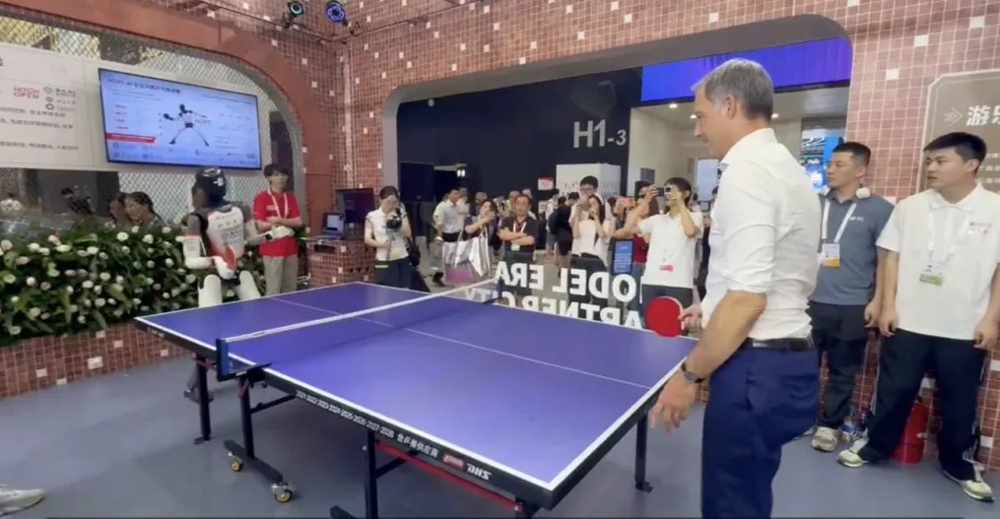

July 20, 2026 · WAIC Shanghai
HOPE AI Ping-Pong Challenge Debuts at WAIC 2026 on AgiBot's A3
Berkeley and PKU–BAAI teams ran their algorithms on the A3 humanoid against human players — no teleoperation, no scripts, no intervention — previewing HOPE's official event at the 2nd World Humanoid Robot Games this August.
Read more ↗